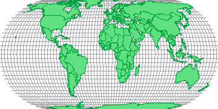
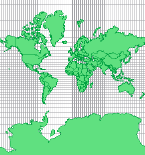

In order to understand map projection it is useful to think of the lines of latitude and longitude as a mesh of lines around the globe. Like the surface of the globe, this mesh of lines cannot be laid flat while still preserving complete accuracy. However, some of the individual lines from the mesh can be accurately transferred from the globe to a plane. The remaining lines can then be rearranged with respect to them in an orderly, mathematically defined way. This process is known as map projection.
There are hundreds of different methods of map projection, each with its own set of advantages and disadvantages. For example, some methods accurately preserve the surface area of the features but increasingly distort their shape the closer they are to the earth's poles (see figure 1).
By contrast, some systems preserve the correct shape of the features but distort their surface areas (see figure 2).
Map projections always have a central point or points, the further away from which data is increasingly distorted. These are usually referred to as the centre/s of the projection.
Once the projection type has been decided, further transformations may be applied. False easing and northing can shift the position of the map relative to the origin (0,0) and the map may also be rotated and/ or scaled.